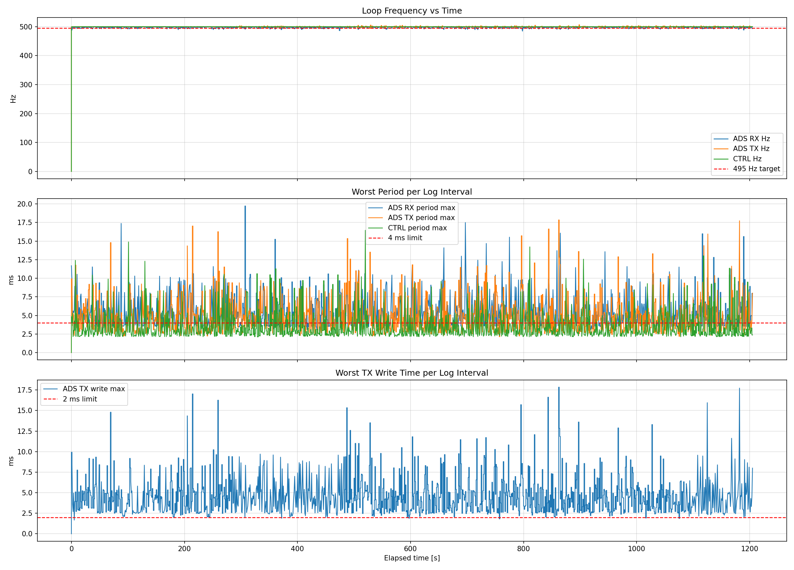
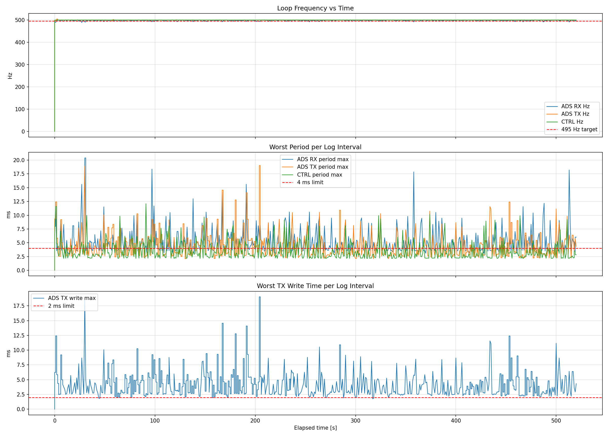

| Case | ADS RX [Hz] | ADS TX [Hz] | CTRL [Hz] | TX write avg [ms] | CTRL cycle avg [ms] |
|---|---|---|---|---|---|
| Multiturn position control | 497.446 | 500.000 | 500.000 | 1.432 | 0.107 |
| Torque control | 498.012 | 500.000 | 500.000 | 1.418 | 0.113 |
Source CSV: test/multiturn_pos_etherCAT.csv
Control mode: Multiturn position control
| Metric | Value |
|---|---|
| ADS RX mean frequency [Hz] | 497.446 |
| ADS TX mean frequency [Hz] | 500.000 |
| CTRL mean frequency [Hz] | 500.000 |
| ADS RX read average [ms] | 0.00196 |
| ADS TX write average [ms] | 1.432 |
| CTRL cycle average [ms] | 0.107 |
| Metric | Value |
|---|---|
| ADS RX period max [ms] | 19.720 |
| ADS TX period max [ms] | 17.846 |
| CTRL period max [ms] | 16.456 |
| ADS TX write max [ms] | 17.843 |
| Metric | P95 | P99 | P99.9 |
|---|---|---|---|
| ads_rx_period_max_ms | 9.973 | 13.353 | 17.496 |
| ads_tx_period_max_ms | 9.387 | 13.513 | 17.739 |
| ads_tx_write_max_ms | 9.177 | 13.295 | 17.733 |
| ctrl_period_max_ms | 8.191 | 10.460 | 14.888 |
| ctrl_cycle_max_ms | 1.797 | 4.769 | 8.121 |

Source CSV: test/torque_loop.csv
Control mode: Torque control
| Metric | Value |
|---|---|
| ADS RX mean frequency [Hz] | 498.012 |
| ADS TX mean frequency [Hz] | 500.000 |
| CTRL mean frequency [Hz] | 500.000 |
| ADS RX read average [ms] | 0.00211 |
| ADS TX write average [ms] | 1.418 |
| CTRL cycle average [ms] | 0.113 |
| Metric | Value |
|---|---|
| ADS RX period max [ms] | 20.397 |
| ADS TX period max [ms] | 19.022 |
| CTRL period max [ms] | 12.096 |
| ADS TX write max [ms] | 19.019 |
| Metric | P95 | P99 | P99.9 |
|---|---|---|---|
| ads_rx_period_max_ms | 9.546 | 15.623 | 20.397 |
| ads_tx_period_max_ms | 9.030 | 12.774 | 19.022 |
| ads_tx_write_max_ms | 8.686 | 12.771 | 19.019 |
| ctrl_period_max_ms | 7.462 | 9.889 | 12.096 |
| ctrl_cycle_max_ms | 3.040 | 5.293 | 8.216 |
